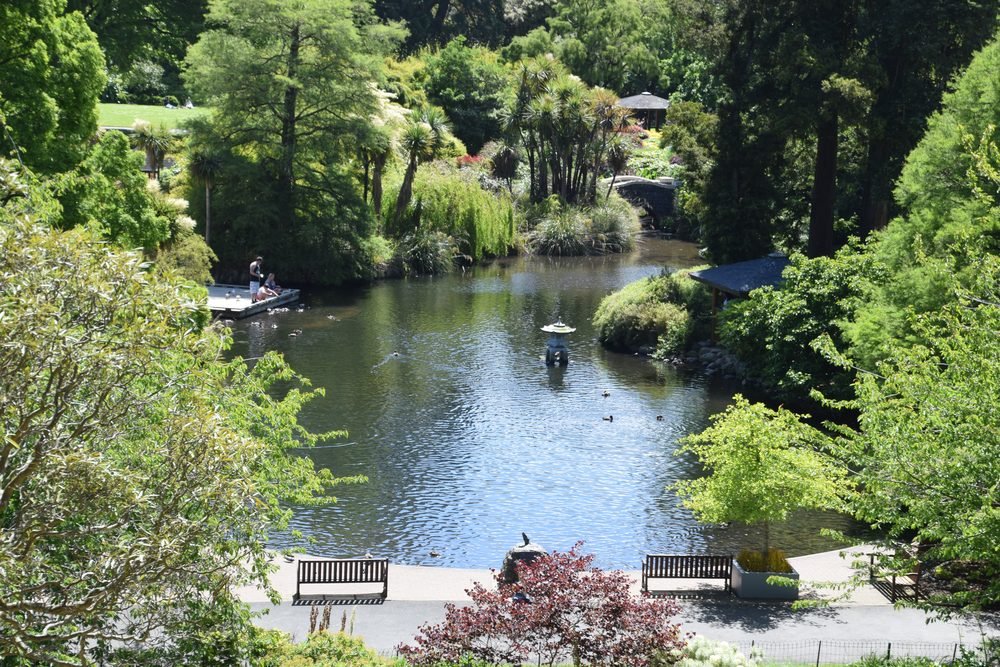
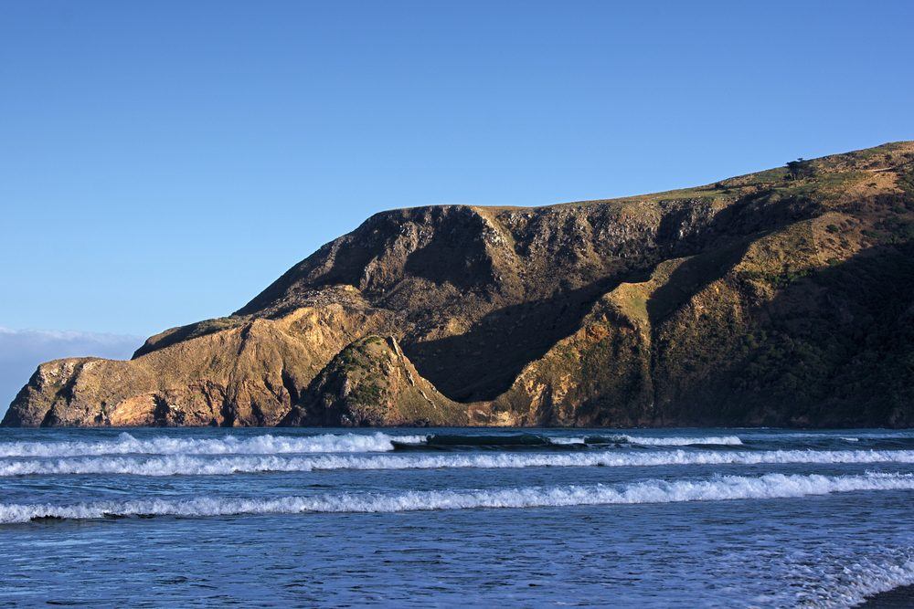
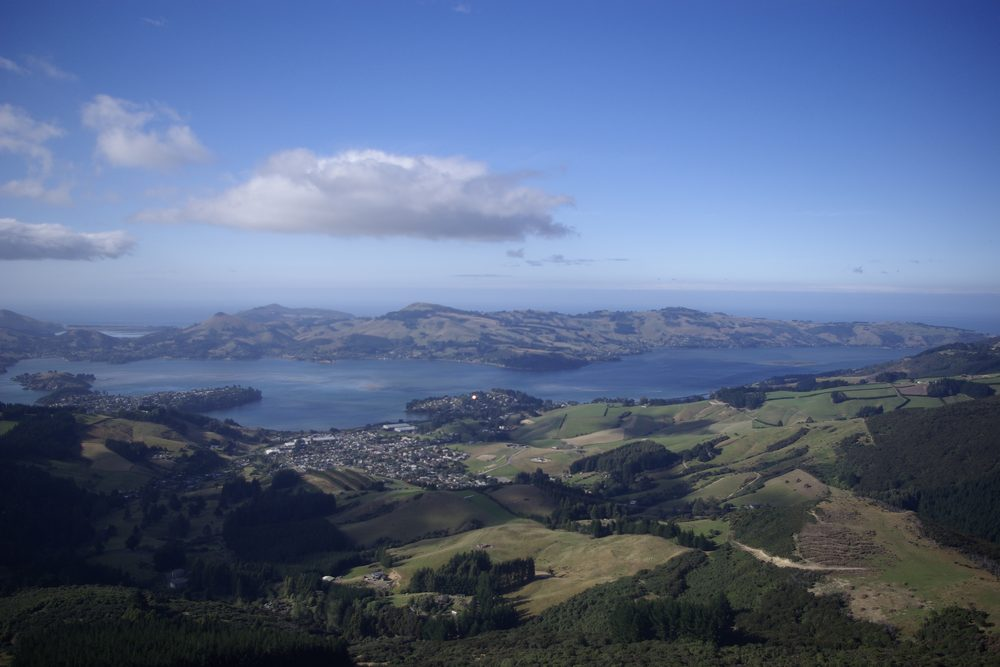
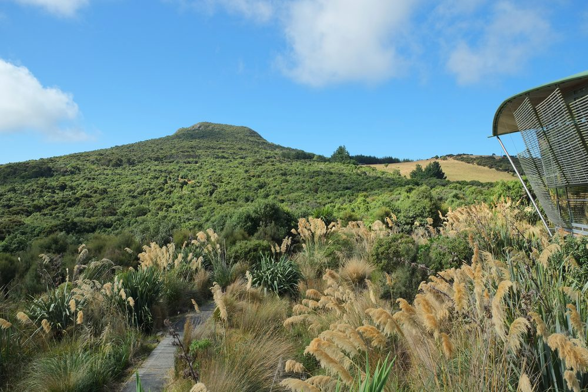
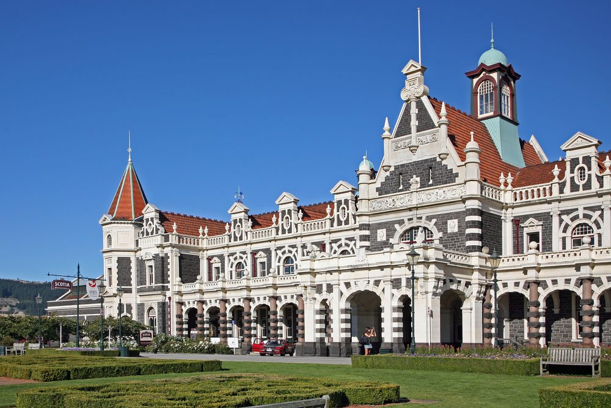
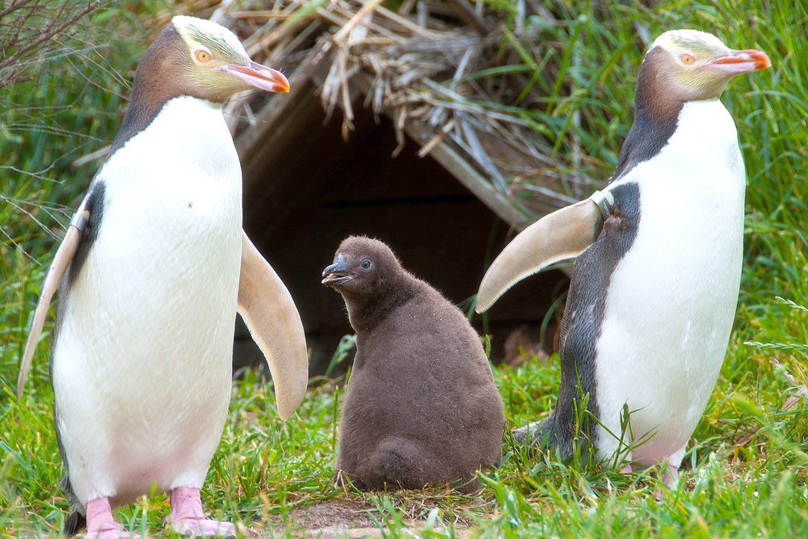

Australia New Zealand Workshop
in Experimental Economics
ANZWEE 2026 — Dunedin, New Zealand
ANZWEE 2026 — Dunedin, New Zealand
ANZWEE 2026 is hosted by the Department of Economics in the Otago Business School at the University of Otago — Ōtākou Whakaihu Waka. Founded in 1869, Otago is New Zealand's oldest university.

About the Workshop
The annual Australia New Zealand Workshop on Experimental Economics (ANZWEE) aims to provide researchers interested in experimental and behavioural economics with an opportunity to present their latest research, receive constructive feedback in an informal environment, and network with other researchers.
ANZWEE 2026 is the 19th edition of the workshop, held in Dunedin and hosted by the Department of Economics in the University of Otago's Otago Business School. We welcome submissions from researchers at all career stages working in experimental and behavioural economics.
Important Dates
Schedule
The workshop runs across two rooms in parallel on Monday 16 and Tuesday 17 November 2026, with 48 papers in sixteen themed sessions and a keynote each afternoon. Each paper has 17 minutes to present and 3 for comments. All presenters are invited to the workshop dinner on the Monday evening.
Room ACharitable Giving I
Room BBelief Updating I
Room ACharitable Giving II: Motives, Reporting & Norms
Room BComplexity & Choice Quality
Room AGender & Careers
Room BBounded Rationality & Imprecision
Room ATeams, Public Goods & Cooperation
Room BRisk & Gambling
Room AMatching & Market Design
Room BBelief Updating II: Demand for Information
Room AVoting & Political Economy
Room BTime Preferences & Self-Control
Room AMarkets, Experts & Consumers
Room BCoordination, Leadership & Strategy
Room AField Experiments in Health & Education
Room BMethods & Tools
With the workshop moving to Dunedin, the previously advertised Central Otago activities (the Rob Roy Glacier hike and Gibbston Valley wine tasting) will no longer run. We may organise optional social activities in and around Dunedin once the new dates and programme are confirmed — any plans will be posted here and circulated to registered participants.
Where We Meet
Beyond the Workshop
Dunedin — Ōtepoti — sits at the head of a long harbour on New Zealand's southeast coast, with the University at its centre and wild coastline a short drive away. If you are able to extend your stay, there is a great deal worth seeing within half an hour of campus.

New Zealand's oldest botanic garden, founded in 1863, and a ten-minute walk from campus. Twenty-eight hectares of rose gardens, native bush, an aviary and a rhododendron dell.

A volcanic finger of land reaching into the Pacific, known for albatross, sea lions and yellow-eyed penguins, plus dramatic clifftop walks at Sandymount and Lovers Leap.

The harbour runs 20 km from the city out to Taiaroa Head. The road along either shore makes for a memorable drive, with Port Chalmers and its cafés partway along.

A 307-hectare valley of coastal Otago forest 20 km north of the city, ringed by a 9 km predator-resistant fence. Home to takahē, kākā, kiwi, tuatara and Otago skinks.

George Troup's Flemish Renaissance landmark of 1906 — the extravagance of which earned him the nickname “Gingerbread George” — and among the most photographed buildings in New Zealand.

The Otago Peninsula Eco Restoration Alliance — formerly Penguin Place — runs guided tours of its reserve for the endangered yellow-eyed penguin, hoiho. Tour fees fund the conservation work.
Participation
ANZWEE 2026 will be held in-person only. There is no workshop fee for ANZWEE 2026. However, we request all participants — including non-presenters — to register to confirm their attendance.
Call for Papers
We welcome submissions of papers in experimental and behavioural economics at any stage of completion. The submission deadline is Monday 14 September 2026 (any time zone).
Your submission should include your name, institution and email address; the paper title, co-authors and abstract; a few keywords; the topic area(s) your paper fits; and whether you plan to attend the workshop dinner.
When you submit, you can tag your paper with one or more of these topic areas:
Attendance
All attendees — whether presenting or not — are asked to register so we can plan numbers. Registration is free. Please indicate whether you plan to attend the reception and dinner on Monday 16 November, and note any dietary requirements.
The Team
ANZWEE 2026 is organised by a team from the University of Otago and Macquarie University.
For enquiries, contact us at ANZWEE2026@otago.ac.nz